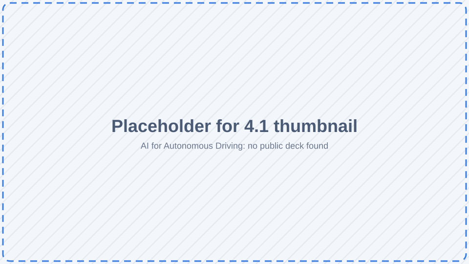

Session 1 · Core
Introduction to NAIRR
What NAIRR and Jetstream2 are, connecting to the hub, and hands-on comparisons of local vs. cloud compute.
Hands-on workshops that teach AI for cybersecurity, security of AI systems, efficient edge AI and autonomous driving, run on the National AI Research Resource (NAIRR) through Jetstream2.

A two-university NAIRR project building open, reusable AI workshops
The workshop materials are developed by Worcester Polytechnic Institute (WPI) and Oakland University (OU) as part of the NAIRR program. They cover AI for cybersecurity, security of AI systems, AI-enabled sensing and control, efficient edge AI, and case studies that combine all of them.
Every workshop runs in a browser on a shared JupyterHub hosted on Jetstream2, so participants need no local GPU or setup.
Placeholder: award number, program dates, PI / Co-PI list, NSF EAGER description
Intro, 11 workshops, and a wrap-up
Cybersecurity · Edge AI · Autonomous systems
OU and WPI
Everything runs on the hub
Start with the introduction, follow a track, then bring the tracks together in case studies
Adapted from the series diagram in WPI-LIONS-Group/NAIRR-Workshops.
Each one links to its notebooks and slides in the repository where it lives
What NAIRR and Jetstream2 are, connecting to the hub, and hands-on comparisons of local vs. cloud compute.

Binary classification and vulnerability detection with the NSL-KDD dataset.

Adversarial attacks and defenses, model inversion, digital watermarking and LLM watermarking.

Quantization, pruning and knowledge distillation.

Efficient ViT attention, LLM SmoothQuant and diffusion model acceleration.

Placeholder: description and materials link

Camera sensing, LiDAR sensing, and AI-based search and planning.

Camera–LiDAR projection, Kalman filtering, LiDAR 3D tracking, path-tracking control and a capstone.

Network traffic analysis, edge AI anomaly detection and streaming inference with alerts.

CAN-bus intrusion detection, sensor spoofing, and a DriveLM vision-language model.

Agentic edge RAG, real-time decision-making, imitation learning and intelligent offloading, with a small local LLM on CPU.

Data fusion, multimodal threat detection, real-time inference and alerts, and autonomous response simulation.

A lecture-only recap that ties the series together.
A JupyterHub on Jetstream2, provided through the NAIRR Pilot
Each workshop has a link that logs you in and pulls its notebooks into your workspace.
One per workshop, CPU or GPU, with every library already installed.
Notebooks run on Jetstream2 servers. Large datasets and models are already mounted.
Your home folder persists between sessions and workshops.
Research groups can use the project's Jetstream2 allocation for their own work
Groups we work with run their own virtual machines on the project. The researcher guide covers what this project also runs, what things cost, and the rules that keep a shared allocation working.
Ask for an instance by opening a GitHub issue. It's created for you with sensible defaults, idle instances shut down automatically, and nobody needs admin access to the cloud project.
Faculty, graduate students and REU undergraduates at OU and WPI